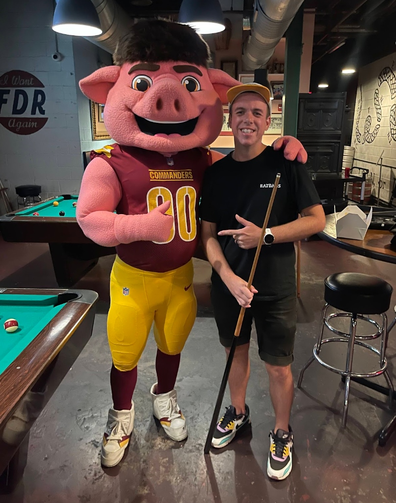

Hello
I'm TJ Cichecki
I've spent the last 15 years solving brand problems for organizations across industries through my agency Workhorse. Recently my research has focused engaging new tools to learn how AI can assist experienced designers solve problems like never before.
Design is a decision,
not a decoration.
Most of the brand problems I get called in to solve aren't really design problems. They're clarity problems. The organization knows what they do but can't articulate why it matters, and that disconnect shows up in everything they put out into the world.
Strategy before aesthetics.
A logo doesn't fix a positioning problem. I start with the hard questions: who are you for, what do you actually believe, and where does that need to show up? The visual identity becomes the output of that thinking, not the starting point.
Systems over one-offs.
A brand isn't a file you hand off. It's a system that has to work when you're not in the room. I build identity systems with enough structure to stay consistent and enough flexibility to evolve as the organization does, whether that's across teams, mediums, or years.
Cross-industry pattern recognition.
I've worked across government, tech, hospitality, arts, nonprofits, and real estate, which means I bring references to engagements that your competitors won't. Some of the best brand thinking I've done came from applying patterns from one industry to a completely different one.
Designed for the real world.
Great work on a screen means nothing if it falls apart at the printer, on a sign, or in the hands of an internal team who didn't get the memo. I design for production, for implementation, and for the people who will carry the brand forward long after the project wraps.
Selected Work
Brand identity, exhibition design, environmental graphics, packaging, and campaign work across 15 years and a range of industries.
The future of Brand work.
I spent 15 years solving brand and design problems for clients. Over the last two, I've been deep in LLMs and AI tooling, exploring how these technologies can help experienced design practitioners solve those same problems faster and with more consistency. The key word there is experienced. These tools are powerful, but they need someone who knows what good looks like to guide them.
Three ways to work together
Solve it for you
You have a brand or design problem and you want it handled. I come in, do the strategic and creative work, and deliver a solution. This is the traditional consulting engagement, now augmented by AI where it makes sense.
Teach your team how to solve it
Your team is capable but needs a framework. I run workshops and training sessions that give your designers and brand managers the thinking models and AI workflows to tackle these problems on their own going forward.
Teach your people to use the tools
Your team already knows what to do, they just need to learn the tooling. I train designers, marketers, and ops teams on how to use AI tools to make better decisions, move faster, and maintain brand consistency without bottlenecking on a single person.
Notes & thinking.
Observations on brand strategy, design systems, AI tooling, and the things I keep coming back to.
Claude Code's Source Code Leaked. Here's What Designers Should Actually Care About.
Half a million lines of production code got leaked. I went through the breakdowns and pulled out the things that actually matter for how I work as a designer.
March 2026What Claude Code Actually Is: The Architecture Visual
A visual breakdown of the execution pipeline, six core systems, essential commands, and the habits that separate the top 1% of Claude Code users.
March 2026Why AI won't replace designers, but designers who use AI will replace those who don't
The conversation around AI in design keeps missing the point. The tool doesn't do the thinking. It accelerates the thinking of someone who already knows what good looks like.
March 2026The clarity problem most brands don't know they have
Most organizations can tell you what they do. Very few can tell you why it matters. That gap between function and meaning is where brand strategy actually lives.
February 2026Cross-industry pattern recognition as a design advantage
Some of the best solutions I've delivered came from applying patterns from completely unrelated industries. When you've worked across government, hospitality, and tech, you see connections others miss.
January 2026Building an AI-assisted brand workshop from scratch
I rebuilt my entire workshop format around LLM tooling. Not to cut corners, but to spend more time on the parts that actually matter and less time on the parts that don't.
December 2025Background
I've been doing this for over 15 years. Startups that didn't have a name yet, nonprofits trying to explain complex missions to donors, government agencies that needed to feel less like government agencies, and established companies going through reinvention. The common thread across all of it has been translation: figuring out what an organization actually is, and making that legible to the people who need to see it.
I founded Workhorse Collective in 2014 because I wanted to do this work in a way that was strategic first and visual second. Before that, I designed digital products at PBS, built campaigns for Fortune 500 brands like Intel and Google at David All Group, and spent six years on the board of AIGA DC where I helped shape DC Design Week and the broader design community in Washington.
I studied Visual Communications at Northern Illinois University, where the foundation in print, editorial, and traditional media still shows up in how I think about hierarchy and composition, even when the work is entirely digital.
In the last two years, the work has expanded. I've been exploring how LLMs can support the kind of strategic brand work I've always done, and how experienced practitioners can use these tools to work faster without sacrificing the judgment that makes the work good in the first place. That's become a growing part of what I do: helping organizations figure out where AI fits into their creative operations and training their teams to use it well.

Outside the studio.
When I'm not building brands, I'm spending time with my wife and our cat Lily, or focused on competitive pool. In DC, I run and host a weekly tournament, serve as captain of an APA league team, and stay closely connected to high-level amateur pool, including qualifying for the APA World Pool Players Championship in Las Vegas in 2024. Pool aligns with how I think. It rewards complex problem solving and a natural understanding of geometry and physics, operating as a system where structure, strategy, and psychology intersect.
That systems mindset has led me to build within the sport itself. I develop tools and technology for the cue sports industry, most recently creating a live streaming app to better capture and share matches. I also founded District Carbon, a cue brand focused on performance, feel, and identity. Whether I'm designing tournament formats, building products, or developing new tools, I approach it as an operator. I look for ways to improve the system, elevate the experience, and create something people want to be part of.

Let's work together.
If you're looking for brand work, AI consulting, or training for your team, I'd like to hear what you're working on.